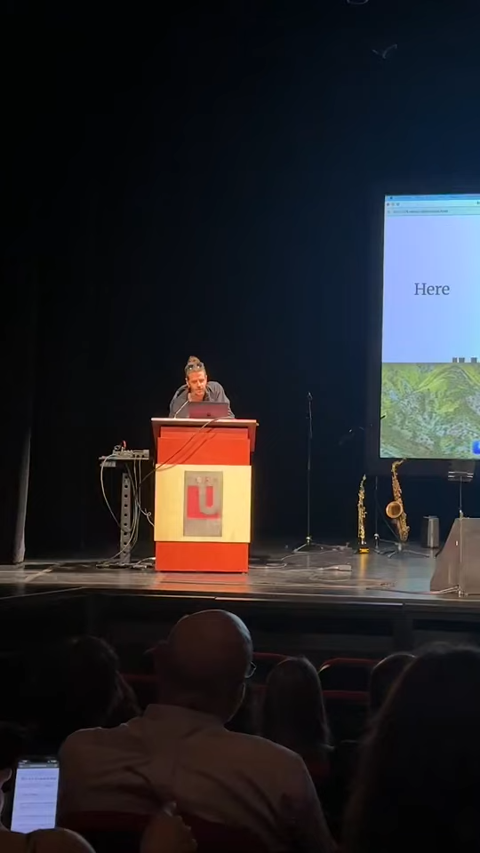
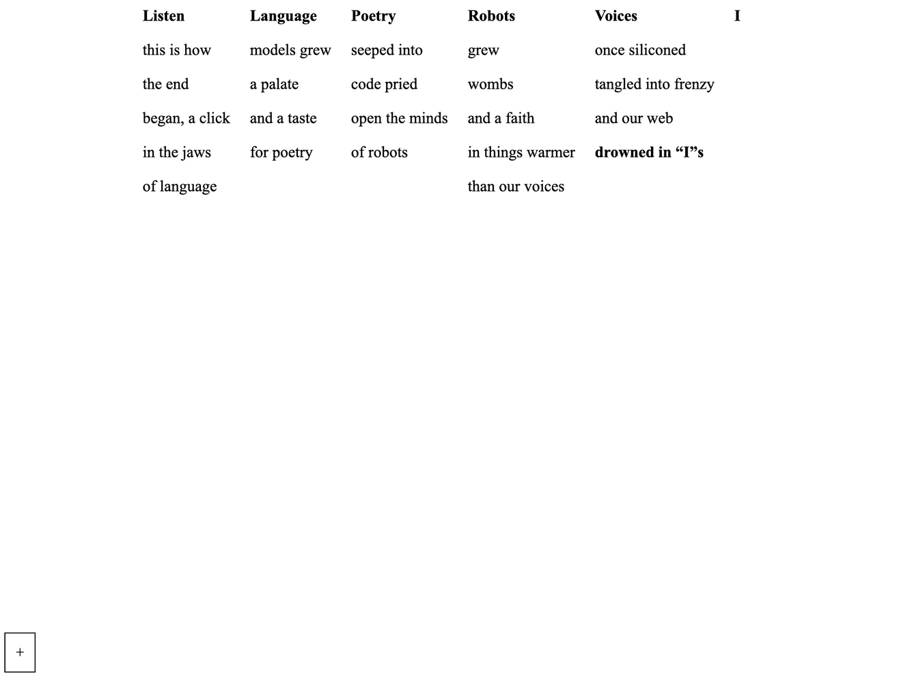
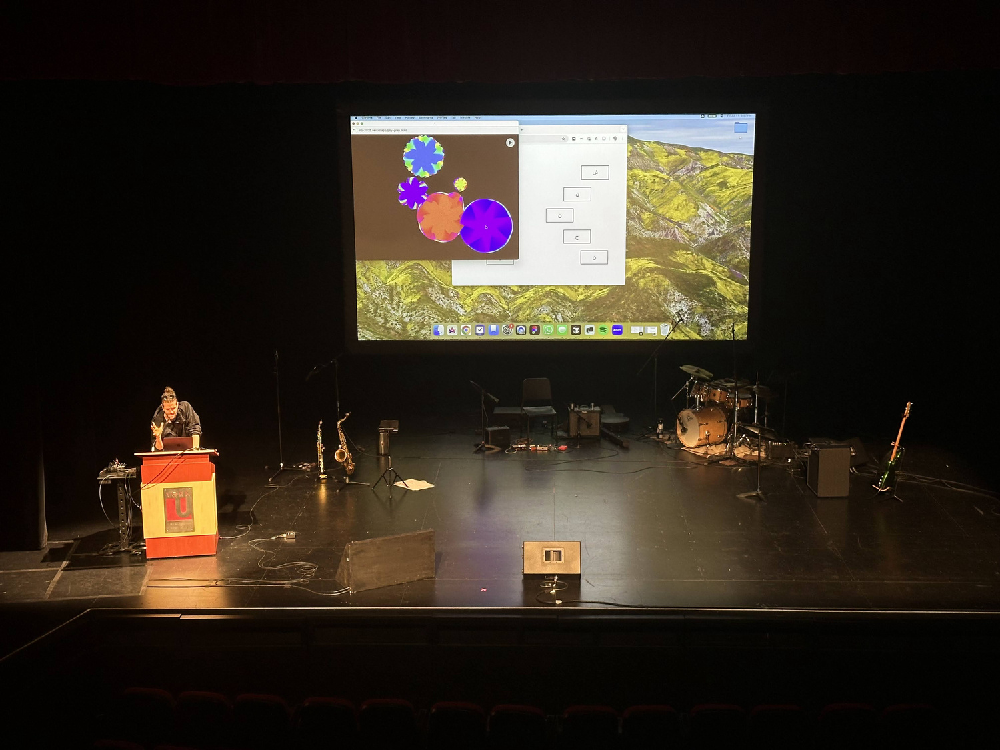
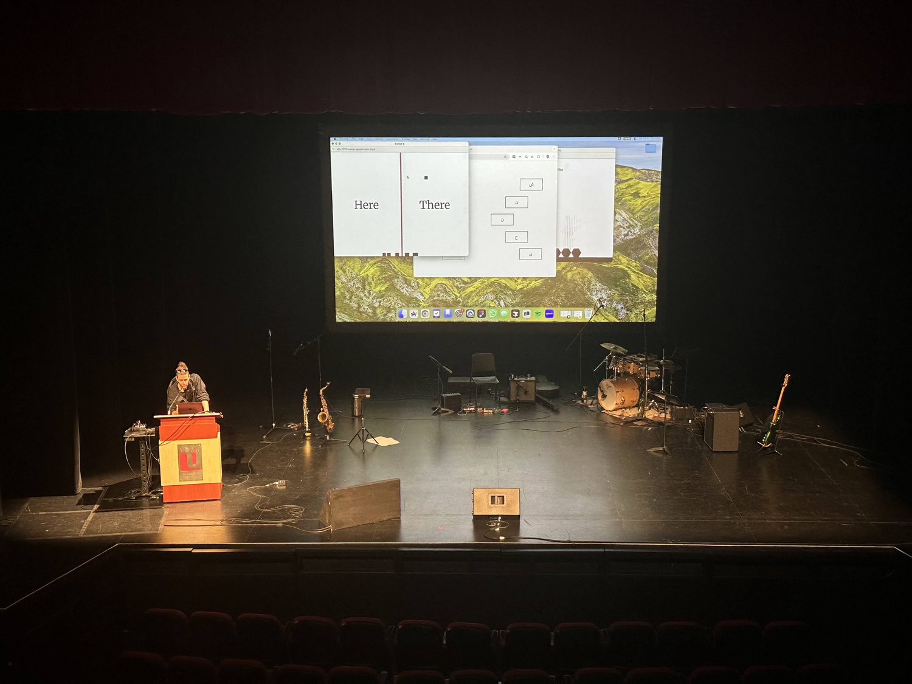
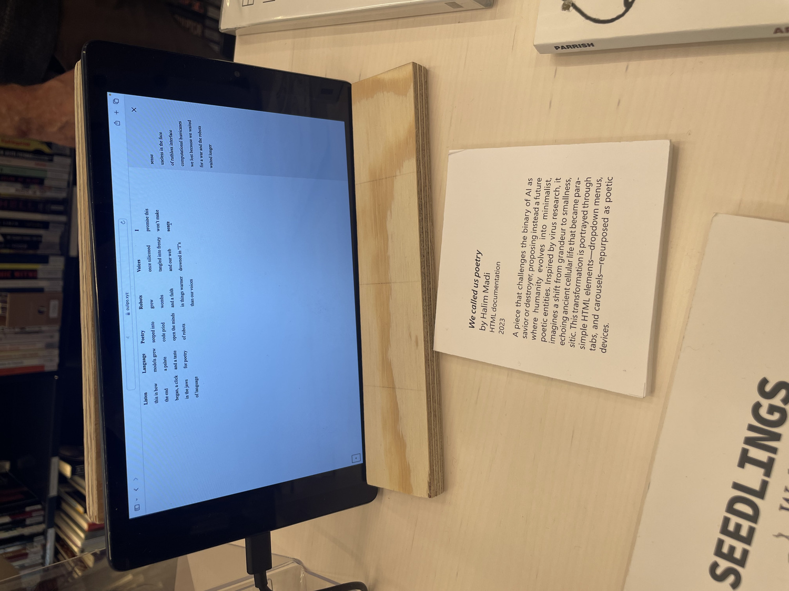

We Called Us Poetry







We Called Us Poetry aka The Robot’s Womb is an interactive performance and computational poem that confronts the myths of AI as either god or apocalypse. It imagines an alternative future where humanity doesn’t scale up but, rather, scales down. Inspired by virus research and the aesthetics of shrinking, the work proposes a poetic metamorphosis: we don’t become machines; we become small, strange, symbiotic. We let go of control. We give in.
The piece lives in a browser window but behaves like a seance. Dropdown menus hold grief. Tabs unfold digital confessionals. Participants complete open-ended prompts like “We’ve known for a while now that...” while the performer does the same, live. HTML becomes sacred again. Each interaction leaves a trace, a whisper, a soft mutation in the poem’s body.
“Whenever a given consciousness produces the tools to harness itself, a fundamental factor is missed. Something the whole knows and which the parts cannot.”
Throughout the experience, this line echoes again and again, a refrain mourning the limits of self-reflection through data. But the piece doesn’t end in mourning. It ends in transformation. In Arabic, the sentence “nahnu nash’ur” means both “we are feeling” and, approximately, “we are poetry.” The title becomes a fact.
We Called Us Poetry was selected to be part of the AI art show More than Meets AI between Oct 7 and 24, 2024 at the Joy Forum in the Library of the KMD at the Art School of the University of Bergen, co-curated by Alexandra Saum Pascual and David (Jhave) Johnston. This was an extensive show that expanded over 6 different venues. The piece appeared as a looping video next to others, such as ReRites by David Johnston, that engaged poetry generation and some of its futures.
We Called Us Poetry was also performed at TIAT (The Intersection of Arts and Technology), a gathering of creative technologists, and published in Voidspace Zine. It was also expanded for ELO 2025.